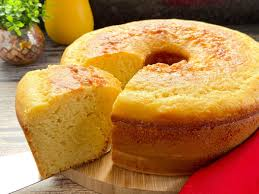

O bolo de Fubá é um bolo muito gostoso para um café e ter uma tarde deliciosa
Um bolo gostoso, macio e saboroso pra surpreender os amigos e familiares com café E para isso, bolo de fubá é considerada por muitos uma das melhores escolhas para uma tarde, por ser um bolo macio.